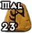
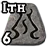
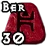
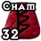
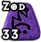
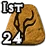

Morning Dew
Polearm
Mal Ith Ber Cham Zod Ist
6 sockets
Required Level: 69
+10 to Required Level
+50% Increased Attack Speed
+300-325% Enhanced Weapon Damage
+2-3 to Druid Skill Levels
+3-5 to Melee Mastery
10% chance to cast level 20 Static Field when you kill an enemy
+25% to All Resistances
Runeword
Morning Dew
Mal + Ith + Ber + Cham + Zod + Ist
- Sockets
- 6
- Goes into
- Polearm
- Required level
- 69
Runes, in order
- Mal Rune

Ith Rune
Ber Rune
Cham Rune
Zod Rune
Ist Rune